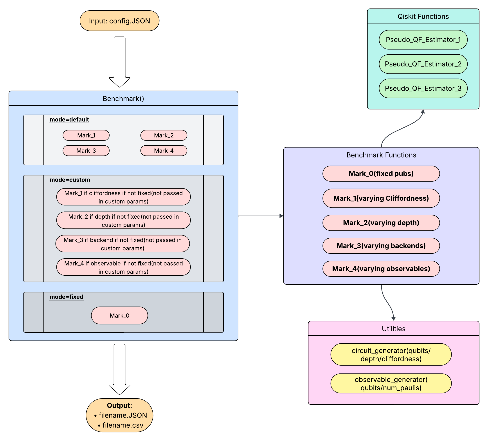

Introduction
As quantum devices grow in scale, benchmarking their performance becomes increasingly critical. Due to noise and variability, effective benchmarks must be well-defined, device-independent, and reflective of overall system behavior [1]. Quantum Volume (QV) is a widely used benchmark, but results can be skewed by optimizations like error mitigation, often unreported despite their overhead [1]. Transparent evaluation is essential for fair comparison.
Benchmarking dynamic circuits, involving mid-circuit measurements and feedforward, is less mature. Recent methods interleaving dynamic operations with randomized benchmarking help capture readout and crosstalk errors [2]. For larger systems, Clifford circuits enable scalable benchmarking through classical simulation and can approximate general circuit behavior under certain noise models [3], offering a practical benchmarking approach.
Internship Objectives
Goal 1: Develop and implement a comprehensive benchmarking pipeline for Qiskit, enabling systematic evaluation of circuit functions across diverse configurations.
Goal 2: Assess performance at utility scale while minimizing the number of actual function executions, ensuring efficiency and scalability of the benchmarking process.
Goal 3: Create a predictive scoring metric that estimates circuit performance without requiring execution, allowing rapid evaluation and comparison of circuits.
Challenges
Runtime Overheads: Evolutionary search methods are computationally intensive and may require significant resources to achieve convergence.
Verifiability: Limited availability of ground truth data makes it difficult to reliably train and validate regression models.
Stochastic Errors: Inherent hardware noise introduces variability in circuit results, adding uncertainty to benchmarking and model predictions.
Pipeline & Methods
Fig. 1: High-level overview of the benchmarking pipeline.
- Randomized Circuits: Built by randomly sampling gates to test average-case performance and reveal typical noise behavior across unstructured gate sequences.
-
Mirror Circuits:
A circuit
Ufollowed by its inverseU†, ideally returning the system to its initial state. Deviations indicate accumulated errors and help assess overall fidelity. - Adversarial Circuits: Designed using evolutionary search to amplify the gap between ideal and noisy outputs, exposing worst-case performance and system vulnerabilities.
Future Directions
Future work includes accelerating genetic search using adaptive strategies for faster convergence. Generative models like GANs can be trained to design circuits directly, reducing reliance on search methods. Additionally, modeling error propagation could enable accurate performance estimates for larger circuits based on small-scale benchmarks. Another key avenue is to develop models that accurately capture error propagation, allowing performance estimates to generalize from small-scale benchmarks to larger, more complex circuits.Experimental Results
Fig. 2: Benchmarking runtime and error characteristics of quantum circuits as a function of circuit parameters and estimator behavior. Top row: Heatmaps showing runtime (left) and variance in expectation values (right) across different numbers of qubits, circuit depths, and Cliffordness levels. Middle row: Line plots depicting average runtime versus Cliffordness for fixed 11-qubit (left) and 15-qubit (right) circuits at varying depths. Bottom left: Comparative runtime analysis across three estimator functions, varying Cliffordness and depth, for fixed qubit count. Bottom right: Progression of best error across generations in a parallel genetic algorithm, used to optimize circuit parameters for maximal error sensitivity.
References
- [1] Amico, Mirko, et al. "Defining standard strategies for quantum benchmarks." arXiv preprint arXiv:2303.02108 (2023).
- [2] Shirizly, Liran, Luke CG Govia, and David C. McKay. "Randomized benchmarking protocol for dynamic circuits." Physical Review A 111.1 (2025): 012611.
- [3] Merkel, Seth, et al. "When Clifford benchmarks are sufficient; estimating application performance with scalable proxy circuits." arXiv preprint arXiv:2503.05943 (2025).
- [4] Qiu, Hao, Leonardo Lucio Custode, and Giovanni Iacca. "Black-box adversarial attacks using evolution strategies." Proceedings of the Genetic and Evolutionary Computation Conference Companion. 2021.